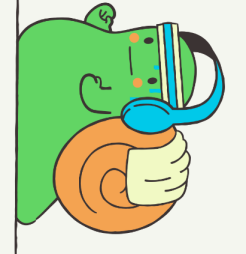

medium - snail (p573)
A snail is at the bottom of a 6-foot well and wants to climb to the top. The snail can climb 3 feet while the sun is up, but slides down 1 foot at night while sleeping. The snail has a fatigue factor of 10%, which means that on each successive day the snail climbs 10% × 3 = 0.3 feet less than it did the previous day. (The distance lost to fatigue is always 10% of the first day’s climbing distance.) On what day does the snail leave the well, i.e., what is the first day during which the snail’s height exceeds 6 feet? (A day consists of a period of sunlight followed by a period of darkness.) As you can see from the following table, the snail leaves the well during the third day.
| Day | Initial Height | Distance Climbed | Height After Climbing | Height After Sliding |
|---|---|---|---|---|
| 1 | 0' | 3' | 3' | 2' |
| 2 | 2' | 2.7' | 4.7' | 3.7' |
| 3 | 3.7' | 2.4' | 6.1' | -- |

Your job is to solve this problem in general. Depending on the parameters of the problem, the snail will eventually either leave the well or slide back to the bottom of the well. (In other words, the snail’s height will exceed the height of the well or become negative.) You must find out which happens first and on what day.
Input
The input file contains one or more test cases, each on a line by itself. Each line contains four integers H, U , D, and F , separated by a single space. If H = 0 it signals the end of the input; otherwise, all four numbers will be between 1 and 100, inclusive. H is the height of the well in feet, U is the distance in feet that the snail can climb during the day, D is the distance in feet that the snail slides down during the night, and F is the fatigue factor expressed as a percentage. The snail never climbs a negative distance. If the fatigue factor drops the snail’s climbing distance below zero, the snail does not climb at all that day. Regardless of how far the snail climbed, it always slides D feet at night.
Output
For each test case, output a line indicating whether the snail succeeded (left the well) or failed (slid back to the bottom) and on what day. Format the output exactly as shown in the example.
Sample Input / Output
| Sample Input | Sample Output |
|---|---|
| 6 3 1 10 | success on day 3 |
| 10 2 1 50 | failure on day 4 |
| 50 5 3 14 | failure on day 7 |
| 50 6 4 1 | failure on day 68 |
| 50 6 3 1 | success on day 20 |
| 1 1 1 1 | failure on day 2 |
Codepost Guide
Create a program to solve the problem and rename it to snail.cpp. Upload the file to codepost.io
sample compile command:
g++ -o snail snail.cpp
sample run command:
./snail 6 3 1 10
corresponding output:
success on day 3
Working Template Code
/***********************************************************************
*
* medium - snail (p573)
*
* Compute when the snail succeeds/ fails to leave the well
*
sample compile command:
g++ -o snail snail.cpp
sample run command:
./snail 6 3 1 10
corresponding output:
success on day 3
*
***********************************************************************/
#include <iostream>
using namespace std;
int main(int input_count, char* input_array[])
{
// change the following code to solve the problem
int H = atoi(input_array[1]);
int U = atoi(input_array[2]);
int D = atoi(input_array[3]);
int F = atoi(input_array[4]);
cout << H << " " << U << " " << D <<" " << F << endl;
}
Sir Roy's Solution
/***********************************************************************
*
* medium - snail (p573)
*
* Compute when the snail succeeds/ fails to leave the well
*
sample compile command:
g++ -o snail snail.cpp
sample run command:
./snail 6 3 1 10
corresponding output:
success on day 3
*
***********************************************************************/
#include <iostream>
using namespace std;
int main(int input_count, char* input_array[])
{
// change the following code to solve the problem
int H = atoi(input_array[1]);
int U = atoi(input_array[2]);
int D = atoi(input_array[3]);
int F = atoi(input_array[4]);
// cout << H << " " << U << " " << D <<" " << F << endl;
int day = 1;
float init_height =0;
float dist_climbed = U;
float height_after_climb = init_height + dist_climbed;
if (height_after_climb > H) {
cout << "success on day " << day << endl;
return 1;
}
float height_after_slide = height_after_climb - D;
if (height_after_slide < 0) {
cout << "failure on day " << day << endl;
}
// cout << day << " " << init_height << " " << dist_climbed <<" " << height_after_climb << " " << height_after_slide<< endl;
while (height_after_climb <= H && height_after_slide >= 0 ){
day++;
init_height = height_after_slide;
dist_climbed = dist_climbed - (U * (float)F/100);
height_after_climb = init_height + dist_climbed;
if (height_after_climb > H) {
cout << "success on day " << day << endl;
return 1;
}
height_after_slide = height_after_climb - D;
if (height_after_slide < 0) {
cout << "failure on day " << day << endl;
}
// cout << day << " " << init_height << " " << dist_climbed <<" " << height_after_climb << " " << height_after_slide<< endl;
}
}